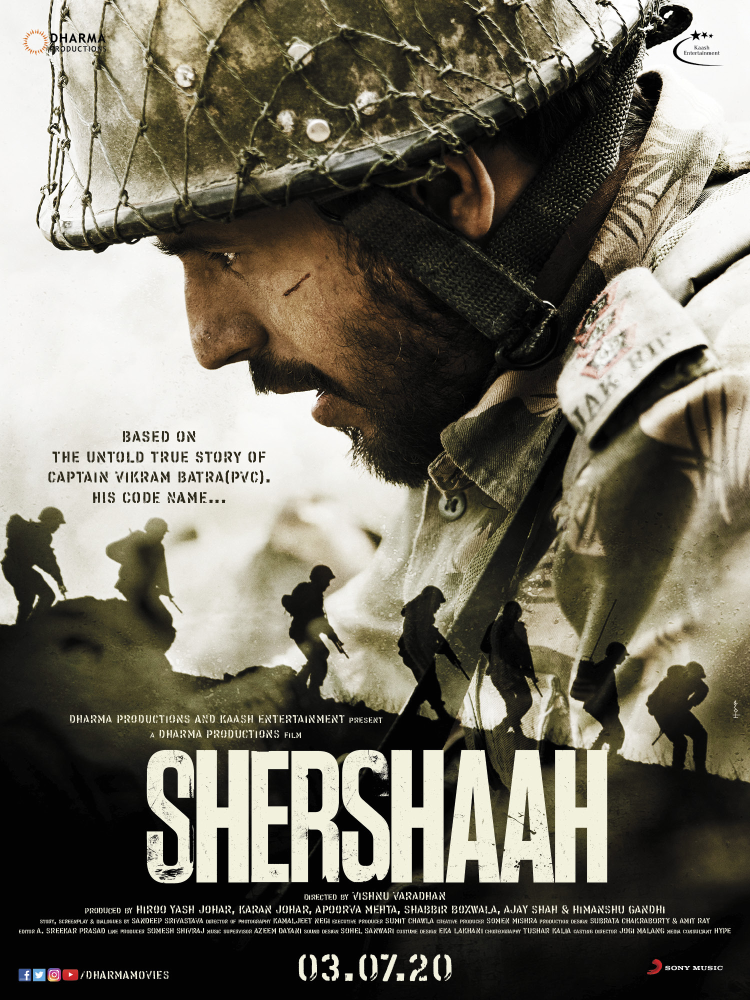

I am SobhaReddy Pittu from Guntur, Andhra Pradesh, India. I have recently finished my Bachelor's in Computer Science from Bapatla Women's Engineering College. I am very excited to learn more about developing web applications. I am interested in music and arts. My favourite music genere is K-pop.
My favorite movie is Shershaah. Shershaah is the biography of PVC awardee Indian soldier Capt. Vikram Batra. This patriotic movie shows the contribution of soldiers during the Kargil War in 1999. The bravery and unflinching courage of Capt. Vikram Batra chasing the enemy out of territory even when they are outnumbered, inspired me to never step back even when the situation becomes hard.
